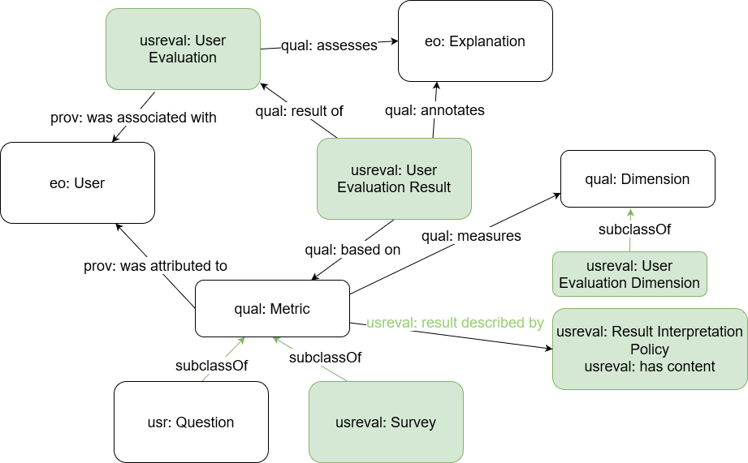

The User Evaluation Ontology
- Latest version:
- https://www.w3id.org/iSeeOnto/userevaluation
- Contributors:
- Anjana Wijekoon
- Chamath Palihawadana
- David Corsar
- Ikechukwu Nkisi-Orji
- Juan A. Recio-Garcia
- Marta Caro Martínez
- Imported Ontologies:
- explanationPattern.owl
- sio.owl
- cpannotationschema.owl
- prov-o#
- eo
- Download serialization:

- License:

- Visualization:

- Cite as:
- The User Evaluation Ontology.
Abstract
The User Ontology is an ontology that models users of the iSee platform. This includes capturing information related to users, their pre-existing knowledge (e.g., knowledge of the domain and/or AI techniques), their intent (i.e. goal/need for an explanation), and industry they are involved in. This ontology was created as part of the iSee project (https://isee4xai.com) which received funding from EPSRC under the grant number EP/V061755/1. iSee is part of the CHIST-ERA pathfinder programme for European coordinated research on future and emerging information and communication technologies.Introduction back to ToC
This is a place holder text for the introduction. The introduction should briefly describe the ontology, its motivation, state of the art and goals.Namespace declarations
| usreval | <https://www.w3id.org/iSeeOnto/userevaluation> |
| schema | <http://schema.org> |
| explanationPattern | <http://linkedu.eu/dedalo/explanationPattern.owl> |
| owl | <http://www.w3.org/2002/07/owl> |
| xsd | <http://www.w3.org/2001/XMLSchema> |
| skos | <http://www.w3.org/2004/02/skos/core> |
| aimodelevaluation | <http://www.w3id.org/iSeeOnto/aimodelevaluation> |
| rdfs | <http://www.w3.org/2000/01/rdf-schema> |
| error | <http://org.semanticweb.owlapi/error> |
| cito | <http://purl.org/spar/cito> |
| prov-o | <http://www.w3.org/TR/prov-o> |
| terms | <http://purl.org/dc/terms> |
| userevaluation | <http://www.w3id.org/iSeeOnto/userevaluation3-> |
| xml | <http://www.w3.org/XML/1998/namespace> |
| usreval | <http://www.w3id.org/iSeeOnto/userevaluation> |
| vann | <http://purl.org/vocab/vann> |
| prov | <http://www.w3.org/ns/prov> |
| foaf | <http://xmlns.com/foaf/0.1> |
| void | <http://rdfs.org/ns/void> |
| resource | <http://semanticscience.org/resource> |
| Qual-O | <http://sensornet.abdn.ac.uk/onts/Qual-O> |
| protege | <http://protege.stanford.edu/plugins/owl/protege> |
| cpannotationschema | <http://www.ontologydesignpatterns.org/schemas/cpannotationschema.owl> |
| explanationexperience | <http://www.w3id.org/iSeeOnto/explanationexperience> |
| core | <http://purl.org/vocab/frbr/core> |
| BehaviourTree | <https://www.w3id.org/iSeeOnto/BehaviourTree> |
| rdf | <http://www.w3.org/1999/02/22-rdf-syntax-ns> |
| obo | <http://purl.obolibrary.org/obo> |
| dc | <http://purl.org/dc/elements/1.1> |
The User Evaluation Ontology: Overview back to ToC
This ontology has the following classes and properties.Classes
- a i model assessment result
- Closed Question
- Likert Scale Question
- Multiple Choice Nominal Questoin
- multiple choice response
- Nominal Question
- nominal question response
- Open Question
- Open Question Response
- Ordered Response Option Value Pair
- outcome
- Question
- Response Option Value Pair
- response options
- Response Options Sequence
- Result Interpretation Policy
- Single Choice Nominal Question
- single choice response
- steps
- Survey
- User Evaluation
- User Evaluation Dimension
- User Evaluation Response
- Yes / No question
Object Properties
Data Properties
Named Individuals
The User Evaluation Ontology: Description back to ToC
Cross reference for The User Evaluation Ontology classes, properties and dataproperties back to ToC
This section provides details for each class and property defined by The User Evaluation Ontology.Classes
- a i model assessment result
- Closed Question
- Likert Scale Question
- Multiple Choice Nominal Questoin
- multiple choice response
- Nominal Question
- nominal question response
- Open Question
- Open Question Response
- Ordered Response Option Value Pair
- outcome
- Question
- Response Option Value Pair
- response options
- Response Options Sequence
- Result Interpretation Policy
- Single Choice Nominal Question
- single choice response
- steps
- Survey
- User Evaluation
- User Evaluation Dimension
- User Evaluation Response
- Yes / No question
a i model assessment resultc back to ToC or Class ToC
IRI: http://www.w3id.org/iSeeOnto/aimodelevaluation#AIModelAssessmentResult
Closed Questionc back to ToC or Class ToC
IRI: http://www.w3id.org/iSeeOnto/userevaluation#Closed_Question
- has super-classes
- Question c
- has sub-classes
- Nominal Question c
- is disjoint with
- Open Question c
Likert Scale Questionc back to ToC or Class ToC
IRI: http://www.w3id.org/iSeeOnto/userevaluation#Likert_Scale_Question
- has super-classes
- Single Choice Nominal Question c
- has members
- likert question test ni
Multiple Choice Nominal Questoinc back to ToC or Class ToC
IRI: http://www.w3id.org/iSeeOnto/userevaluation#MultipleChoiceNominalQuestion
- has super-classes
- Nominal Question c
multiple choice responsec back to ToC or Class ToC
IRI: http://www.w3id.org/iSeeOnto/userevaluation#MultipleChoiceResponse
- has super-classes
- nominal question response c
Nominal Questionc back to ToC or Class ToC
IRI: http://www.w3id.org/iSeeOnto/userevaluation#NominalQuestion
- has super-classes
- Closed Question c
- has sub-classes
- Multiple Choice Nominal Questoin c, Single Choice Nominal Question c
nominal question responsec back to ToC or Class ToC
IRI: http://www.w3id.org/iSeeOnto/userevaluation#NominalQuestionResponse
- has super-classes
- User Evaluation Response c
- has sub-classes
- multiple choice response c, single choice response c
Open Questionc back to ToC or Class ToC
IRI: http://www.w3id.org/iSeeOnto/userevaluation#Open_Question
- has super-classes
- Question c
- is disjoint with
- Closed Question c
Open Question Responsec back to ToC or Class ToC
IRI: http://www.w3id.org/iSeeOnto/userevaluation#OpenQuestionResponse
- has super-classes
- User Evaluation Response c
Ordered Response Option Value Pairc back to ToC or Class ToC
IRI: http://www.w3id.org/iSeeOnto/userevaluation#OrderedResponseOptionValuePair
- has super-classes
- Response Option Value Pair c
- has members
- agree 3 ni, disagree 1 ni, neutral 2 ni
outcomec back to ToC or Class ToC
IRI: http://www.w3id.org/iSeeOnto/explanationexperience#Outcome
- has super-classes
Questionc back to ToC or Class ToC
IRI: http://www.w3id.org/iSeeOnto/userevaluation#Question
- has super-classes
- metric c
- has sub-classes
- Closed Question c, Open Question c
Response Option Value Pairc back to ToC or Class ToC
IRI: http://www.w3id.org/iSeeOnto/userevaluation#ResponseOptionValuePair
- has super-classes
- key literal value pair c
- has sub-classes
- Ordered Response Option Value Pair c
- has members
- no ni, yes ni
response optionsc back to ToC or Class ToC
IRI: http://www.w3id.org/iSeeOnto/userevaluation#ResponseOptions
- has super-classes
- has sub-classes
- Response Options Sequence c, steps c
- has members
- yes no response options ni
Response Options Sequencec back to ToC or Class ToC
IRI: http://www.w3id.org/iSeeOnto/userevaluation#ResponseOptionsSequence
- has super-classes
- response options c
- has members
- 3 scale agree disagree ni
Result Interpretation Policyc back to ToC or Class ToC
IRI: http://www.w3id.org/iSeeOnto/userevaluation#ResultInterpretationPolicy
- has super-classes
- entity
Single Choice Nominal Questionc back to ToC or Class ToC
IRI: http://www.w3id.org/iSeeOnto/userevaluation#SingleChoiceNominalQuestion
- has super-classes
- Nominal Question c
- has sub-classes
- Likert Scale Question c, Yes / No question c
single choice responsec back to ToC or Class ToC
IRI: http://www.w3id.org/iSeeOnto/userevaluation#SingleChoiceResponse
- has super-classes
- nominal question response c
stepsc back to ToC or Class ToC
IRI: http://www.w3id.org/iSeeOnto/userevaluation#Steps
- has super-classes
- response options c
Surveyc back to ToC or Class ToC
IRI: http://www.w3id.org/iSeeOnto/userevaluation#Survey
- has super-classes
- metric c
User Evaluationc back to ToC or Class ToC
IRI: http://www.w3id.org/iSeeOnto/userevaluation#UserEvaluation
- has super-classes
- assessment c
User Evaluation Dimensionc back to ToC or Class ToC
IRI: http://www.w3id.org/iSeeOnto/userevaluation#UserEvaluationDimension
- has super-classes
- dimension c
- has members
- goodness ni, satisfaction ni, trust ni
User Evaluation Responsec back to ToC or Class ToC
IRI: http://www.w3id.org/iSeeOnto/userevaluation#UserEvaluationResponse
- has super-classes
- result c
- has sub-classes
- Open Question Response c, nominal question response c
Yes / No questionc back to ToC or Class ToC
IRI: http://www.w3id.org/iSeeOnto/userevaluation#YesNoQuestion
- has super-classes
- Single Choice Nominal Question c
Object Properties
has answer fromop back to ToC or Object Property ToC
IRI: http://www.w3id.org/iSeeOnto/userevaluation#hasAnswerFrom
- has super-properties
- had derivation op
has object valueop back to ToC or Object Property ToC
IRI: http://www.w3id.org/iSeeOnto/userevaluation#hasObjectValue
has stepsop back to ToC or Object Property ToC
IRI: http://www.w3id.org/iSeeOnto/userevaluation#hasSteps
Data Properties
has contentdp back to ToC or Data Property ToC
IRI: http://www.w3id.org/iSeeOnto/userevaluation#hasContent
sequence indexdp back to ToC or Data Property ToC
IRI: http://www.w3id.org/iSeeOnto/userevaluation#sequenceIndex
Named Individuals
- 3 scale agree disagree
- agree 3
- disagree 1
- goodness
- likert question test
- neutral 2
- no
- satisfaction
- trust
- yes
- yes no response options
3 scale agree disagreeni back to ToC or Named Individual ToC
IRI: http://www.w3id.org/iSeeOnto/userevaluation#3-Scale_AgreeDisagree
- belongs to
- Response Options Sequence c
agree 3ni back to ToC or Named Individual ToC
IRI: http://www.w3id.org/iSeeOnto/userevaluation#Agree-3
- belongs to
- Ordered Response Option Value Pair c
disagree 1ni back to ToC or Named Individual ToC
IRI: http://www.w3id.org/iSeeOnto/userevaluation#Disagree-1
- belongs to
- Ordered Response Option Value Pair c
goodnessni back to ToC or Named Individual ToC
IRI: http://www.w3id.org/iSeeOnto/userevaluation#Goodness
- belongs to
- User Evaluation Dimension c
likert question testni back to ToC or Named Individual ToC
IRI: http://www.w3id.org/iSeeOnto/userevaluation#LikertQuestionTest
- belongs to
- Likert Scale Question c
- has facts
- has response options op 3 scale agree disagree
neutral 2ni back to ToC or Named Individual ToC
IRI: http://www.w3id.org/iSeeOnto/userevaluation#Neutral-2
- belongs to
- Ordered Response Option Value Pair c
noni back to ToC or Named Individual ToC
IRI: http://www.w3id.org/iSeeOnto/userevaluation#no
- belongs to
- Response Option Value Pair c
satisfactionni back to ToC or Named Individual ToC
IRI: http://www.w3id.org/iSeeOnto/userevaluation#Satisfaction
- belongs to
- User Evaluation Dimension c
trustni back to ToC or Named Individual ToC
IRI: http://www.w3id.org/iSeeOnto/userevaluation#Trust
- belongs to
- User Evaluation Dimension c
yesni back to ToC or Named Individual ToC
IRI: http://www.w3id.org/iSeeOnto/userevaluation#yes
- belongs to
- Response Option Value Pair c
yes no response optionsni back to ToC or Named Individual ToC
IRI: http://www.w3id.org/iSeeOnto/userevaluation#YesNoResponseOptions
- belongs to
- response options c
Legend back to ToC
op: Object Properties
dp: Data Properties
ni: Named Individuals
References back to ToC
Add your references here. It is recommended to have them as a list.Acknowledgments back to ToC
The authors would like to thank Silvio Peroni for developing LODE, a Live OWL Documentation Environment, which is used for representing the Cross Referencing Section of this document and Daniel Garijo for developing Widoco, the program used to create the template used in this documentation.